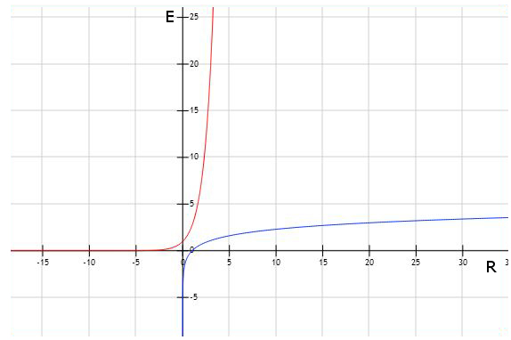
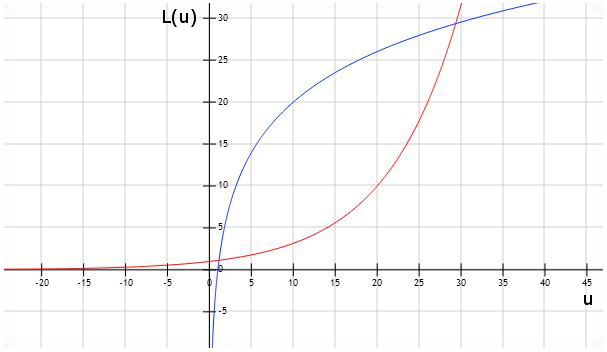

\[
\ E = c \cdot ln(\frac{R}{R_0})
\]
Das Weber-Fechnersche Gesetz beschreibt das Verhältnis zwischen der subjektiven Wahrnehmung eines Reizes \( E \) und der tatsächlichen Reizstärke \( R \). So ist diese subjektive Wahrnehmung proportional zum Logarithmus der Reizstärke.
(Quelle: Wikipedia)
Nach R umgestellt sieht die gleichung wie folgt aus:
\[
\\ R = R_0 \cdot e^{\frac{E}{c}}
\]

Spannungspegel
\[
\ L_u = 20 \cdot lg(\frac{u}{u_0})
\]
Der Spannungspegel (\(L_u\)) ist vor allem in der Tontechnik wichtig. Dabei stellt \( u \) die angelegte Spannung und \(u_0\) die Referenzspannung dar.
\[
\ u = u_0 \cdot 10^{\frac{L_u}{20}}
\]

Datenmenge
\[
\ M = ld N
\]
Auch bei der Datenmenge \( M \) liegt das Verhltnis zwischen der benötigten Datenmenge und der Anzahl der Möglichkeiten \( N \) proprtional zum Logarithmus. So hat man z.B. bei einer Datenmenge von 4 Bit, 16 Möglichkeiten. Die Gleichung nach N aufgelöst sieht dann folgendermaßen aus:
\[
\ N = 2^{M}
\]
\[ y* = \log_{b}{x}
\\ y* = \log_{b}{a} \cdot \log_{a}{x} \]
\[ \begin{array}{c|c|c|c} & \lg x & \ln x & \text{ld } x
\\ \hline \lg x & - & \lg e \cdot \ln x & \lg 2 \cdot \text{ld } x
\\ \hline \ln x & \ln 10 \cdot \lg x & - & \ln 2 \cdot \text{ld } x
\\ \hline \text{ld } x & \text{ld } 10 \cdot \lg x & \text{ld } e \cdot \ln x & -
\end{array} \]
1.2 - Kombinatorik und Zahlentheorie
a)
Permutationen:
Eine Permutation ist eine mögliche Anordnung von n Elementen, unter Einsatz aller Elemente.
Die Anzahl der Permutionen ohne Wiederholungen, d.h. mit n verschiedenen Elementen, lässt sich so darstellen:
\[ \ P_n = n!
\]
und mit Wiederholung:
\[ \ P_n = \frac{n!}{n_1! \cdot n_2! \cdot ... \cdot n_k!} \texttt{mit k unterscheidbaren Elementen}
\]
Eine typische Aufgabe, wie ich sie auch in der Schule behandelt habe, ist die Vergabe von n Plätzen an n Personen.
Variationen:
Im Gegensatz zu Permutationen, verwendet man bei den Variationen nicht zwangsläufig alle n Elemente, sondern k von n Elementen.
Als Formel:
\[ V_n = \frac{n!}{(n - k)!} \texttt{(ohne Wiederholung)}
\\ V_n = n^{k} \texttt{(mit Wiederholung)}
\]
Eine typische Variation (ohne Wiederholung) wäre z.B. das Lotto. Auch hier werden k (z.B. 6) aus n Elementen gezogen und die Reihenfolge spielt eine Rolle.
Kombinationen:
Kombinationen sind Variationen, wobei bei Kombinationen die Reihenfolge nicht berücksichtigt wird.
Als Formel:
\[ K_n = {n \choose k} \texttt{(mit }k \leq n, \texttt{ ohne Wiederholung)}
\\ K_n = \frac{n!}{k!(n-k)!}
\\ K_n = {n+k-1 \choose k} \texttt {(mit Wiederholung)}
\\ K_n = \frac{(n + k - 1)!}{k!(n + k - 1 - k)!} = \frac{(n + k - 1)!}{k!(n - 1)!}
\]
(1)
Kombination ohne Wiederholungen.
\[ K_n = \frac{n!}{k!(n-k)!} : n = 20, k = 5
\\ K_n = \frac{20!}{5!(20 - 5)!} = \frac{20!}{5!\cdot15!}
\\ K_n = 15504
\]
(2)
Kombination mit Wiederholung.
\[ K_n = \frac{(n + k - 1)!}{k!(n + k - 1 - k)!} : n = 20, k = 5
\\ K_n = \frac{(20 + 5 - 1)!}{5!(20 + 5 - 1 - 5)!} = \frac{24!}{5!\cdot19!}
\\ K_n = 42405
\]
Die Windows Bitmap ist, wie der Name schon andeutet vorallem unter Windows zu finden. Kommt dabei entweder un- oder verlustfrei komprimiert vor und hat somit enorme Dateigrößen. Dazu unterstütz es keine Alphakanäle,
d.h. keine Tranzparenz.
JPG
JPG oder JPEG (Joint Photographic Experts Group) ist das am weitesten verwendete Bildformat. So findet vor allem bei Fotos Verwendung, da es sich sehr verlustreich kompriniern lässt und somit kleine Dateigrößen zulässt. Allerdings unterstütz auch JPEG keine Alphakanäle.
PNG
Die Portable Network Graphics ist im Internet am häufigsten zu finden, da es unteranderem Tranzparenz unterstütz. Im Gegensatz zu GIF unterstützt es keine Animation. Dafür wird kann es mit jedem Browser geöffnet werden.
GIF
Das GIF (Graphics Interchange Format) hat die Eigenschaft, dass man in einer GIF-Datei mehrere Bilder speichern kann, welche dann als Animation ausgelegt werden können. GIF unterstützt auch Tranzparenz, allerdings nicht in dem Maße wie PNG. Auch hat ein GIF-Bild nur 256 Farben.
TIFF
Das Tagged Image File Format hat eine sehr gute Qualität und wird meist in Druckereien verwendet, z.B. wenn es um hochauflösende Fotos geht. Mit der hohen Qualität kommt allerdings auch eine enorme Dateigröße hinzu.
Dazu unterstützt es Alphakanäle und das CMYK_Farbmodell, was für Druckereien ebenfalls wichtig ist.
Bevorzugte Bildformate für folgende Sachverhalte
Fotopräsentation zu Hause
JPG. Für eine Fotopräsentation vollkommen ausreichend. Erstens werden Fotos schon standartmäßig von den Kameras selbst als JPG gespeichert. Man spart sich die Konvertierung. Zweitens ist bzw. lässt sich JPG in kleinen Datein speichern und spart Festplatte.
Fotogalerie im Inernet
Auch hier bietet sich JPG an, aus oben genannten Gründen. So auch meine Formatwahl. Die Datei ist recht klein und sieht trotzdem noch annehmbar aus.
Webcomic
PNG. So lassen sich schöne hochauflösende Grafiken machen, bei denen auch mit Tranzparenz gearbeitet werden kann. Auch wird PNG von allen Browsern unterstützt.
Für Animationen bietet sich GIF an.
b)
c)
Verwendete Tools und Software:
Sublime Text 3 fürs Script mit Mathjax für die Mathematischen Formeln
Photoshop zur Bearbeitung des Bildes
Audacity zur Tonaufnahme
FileZilla als FTP-Client und der VPN-Client von Cisco zum Hochladen auf den Uni-Webspace
fooplot.com für die Graphen
Probleme:
Es war Anfangs sehr schwer, ohne jegliche Vorkenntnisse eine Website zu erstellen. Mit der Hilfe eines Komilitonen, viel Koffein und der effektiven Nutzung von Internetforen wurde es besser.